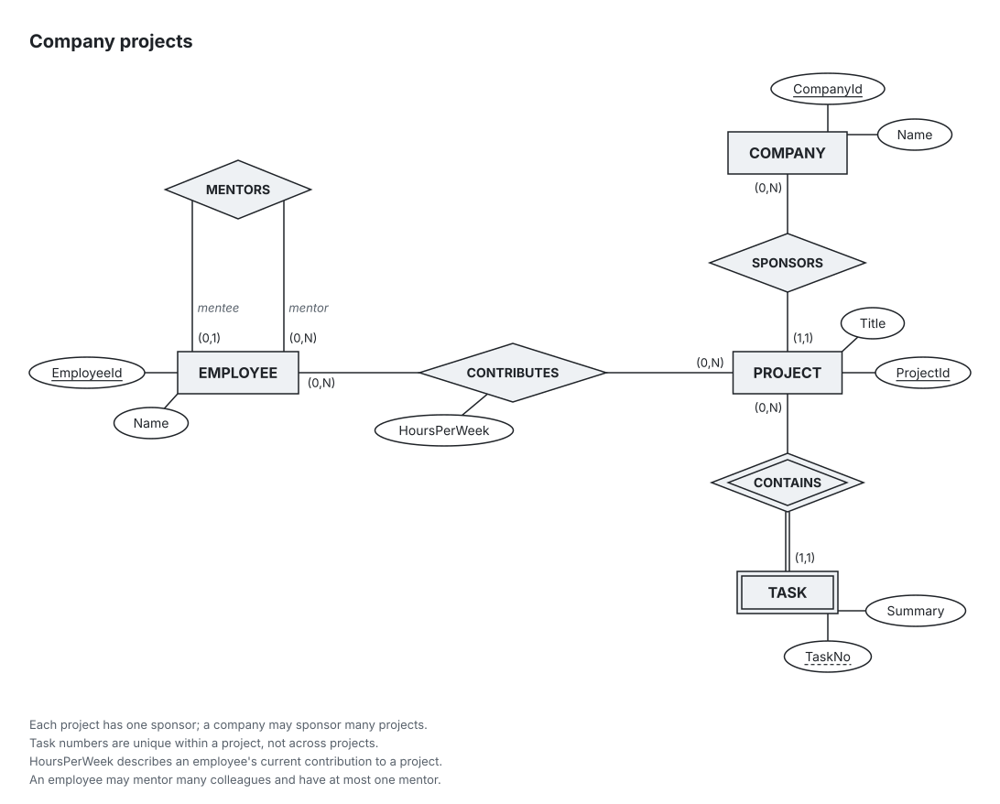
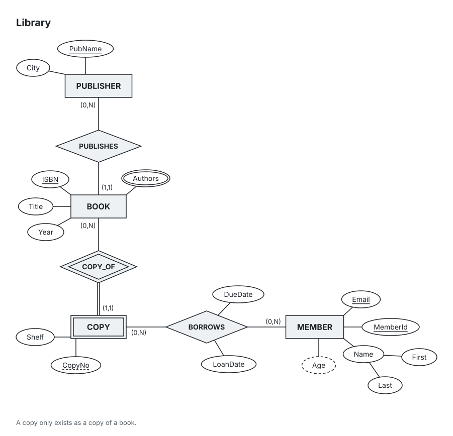
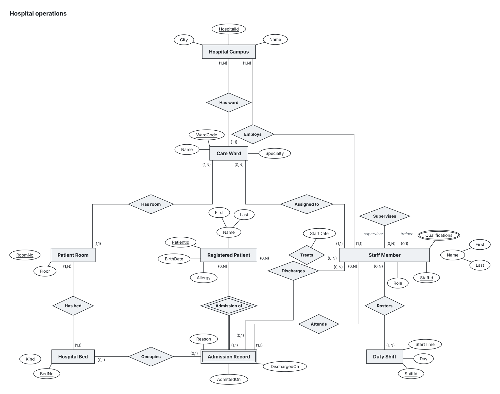
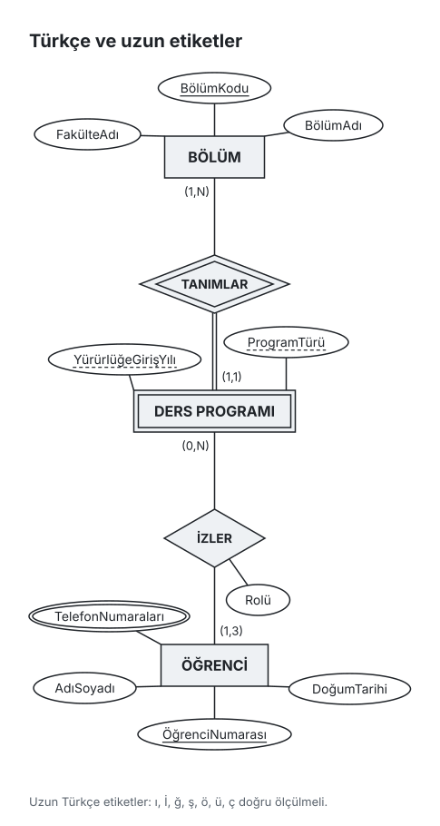
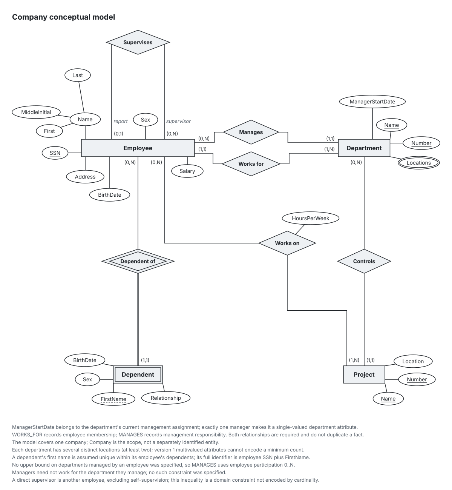
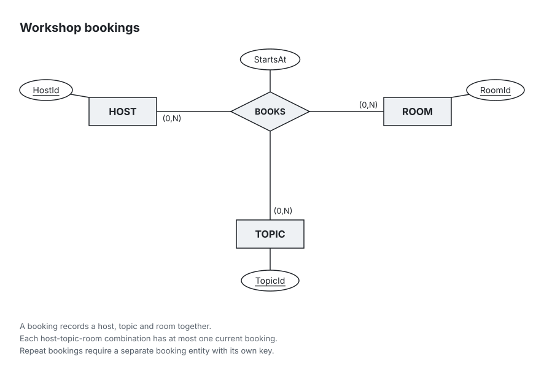

Chen ER diagrams for database courses, written as YAML.
Describe the conceptual model in a YAML file, or let your coding agent write it. chen-er lays it out in textbook Chen notation with (min,max) participation, checks it against ER rules and course conventions, and maps it to relational tables with the reasoning for every step.
npm install -g chen-erd
Installs the chen command. Node.js 24 or later. For a single render without installing: npx chen-erd render model.er.yaml

chen render from examples/company-project.er.yaml, 40 lines of YAML.
How it works
The model file is the only thing anyone writes. Nobody places coordinates: the layout engine draws, lint checks, and the mapper turns the same file into tables.
-
Write the requirements
Start from the task, one plain sentence per line. In the viewer's Requirements tab the lines autosave to
model.er.requirements.md, a Markdown list that reads well in Obsidian and in a PDF.chen init university.er.yaml --empty --title "University" chen serve university.er.yaml --agent claudeuniversity.er.requirements.md saved
- R1Every course is offered by exactly one department.new
- R2Rooms have a capacity.new
- R3A student enrolls in many courses.new
- R4Next requirement
-
Write the model in YAML
Entities, keys, weak entities, composite, multivalued and derived attributes, relationship attributes, recursive roles and n-ary relationships stay explicit in the source. Each
cardis the participation of the entity at that end.Left: the complete examples/library.er.yaml. Right: what
chen renderdraws from it, unedited.library.er.yaml
version: 1 title: Library entities: BOOK: attrs: [ISBN, Title, {name: Authors, multivalued: true}, Year] keys: [[ISBN]] COPY: weak: true attrs: [CopyNo, Shelf] partialKey: [CopyNo] MEMBER: attrs: [MemberId, {name: Name, parts: [First, Last]}, Email, {name: Age, derived: true}] keys: [[MemberId], [Email]] PUBLISHER: attrs: [PubName, City] keys: [[PubName]] relationships: COPY_OF: identifies: COPY ends: - {entity: BOOK, card: 0..N} - {entity: COPY, card: 1..1} BORROWS: ends: - {entity: MEMBER, card: 0..N} - {entity: COPY, card: 0..N} attrs: [LoanDate, DueDate] PUBLISHES: ends: - {entity: PUBLISHER, card: 0..N} - {entity: BOOK, card: 1..1} notes: - "A copy only exists as a copy of a book."
Open the SVG full size -
Render and lint
chen renderwrites SVG, and PNG with--png, measured against the bundled Inter font, so the figure goes into homework as it is.chen lintchecks 19 rules: broken ER structure, course conventions such as a weak entity without a partial key or a generic relationship name, and modelling suspicions such as one fact stored on two paths. Every finding carries a source position, a rule id and a repair hint, so an agent can fix its own mistakes.Actual output for docs/lint-example.er.yaml, exit code 1
chen lint lint-example.er.yaml error:4:11 [weak-without-identifying] Weak entity TASK has no identifying relationship. hint: Add a relationship connecting TASK to its owner and set identifies to TASK. 0 errors does not mean the model is right; it means nothing obviously wrong was found. -
Map to tables, then report
chen mapapplies the ER-to-relational algorithm of Elmasri and Navathe, chapter 9: steps 1 to 7, specialization option 8A and union type step 9. Every table names the step that produced it. Output as text, Markdown, SQL or JSON.chen reportputs requirements, diagram, model, traceability, lint and schema into one Markdown or printable HTML document.Mapping rules and conventions: docs/mapping.md
Excerpt of the actual output for the library model
chen map library.er.yaml BOOK(ISBN [PK], Title, Year, PUBLISHER_PubName) PUBLISHER_PubName → PUBLISHER(PubName) [NOT NULL] Step 4: R:PUBLISHES is 1:N (E:PUBLISHER 0..N, E:BOOK 1..1); FK on E:BOOK, the max=1 (relational N-side) end. COPY(BOOK_ISBN [PK], CopyNo [PK], Shelf) BOOK_ISBN → BOOK(ISBN) [NOT NULL] Step 2: E:COPY is weak, identified by R:COPY_OF; PK = owner PK(s) + partial key. BOOK_Authors(BOOK_ISBN [PK], Authors [PK]) Step 6: A:BOOK.Authors is multivalued; PK = owner PK + stored simple value components. - A:MEMBER.Age: derived attribute omitted; compute it from stored data.

Gallery
Each figure was drawn by chen render from a model in the repository, with no hand placement. Select a figure to open the SVG full size.








Agent workflow
The teacher grades the method, not only the picture. chen serve keeps the reasoning next to the diagram, and the report keeps it on paper.
Requirements tab
Start the viewer with --agent claude or --agent codex. Apply to model sends the new and changed lines to your installed, logged-in Claude Code or Codex CLI, which edits the YAML; the diagram reloads beside it. No API key is involved, and the viewer itself never writes the model.
Traceability
Each requirement is linked to the elements that implement it, checked against the model. A line that nothing implements is marked, in words and a glyph rather than colour alone.
- R1Every course is offered by exactly one department. COURSE, DEPARTMENT, OFFERS. COURSE takes part in OFFERS with 1..1.
- R2Rooms have a capacity. not covered. Not reflected in the model.
Method report
chen report model.er.yaml --format html writes one self-contained, printable A4 file: requirements, ER diagram, model, traceability, lint and relational schema. The example on the right comes from the hospital model; its eight requirements were written by hand and never applied, so the report honestly lists them as not applied yet.
chen report docs/report/campus.er.yaml --format html.MCP server
The package also installs chen-er-mcp, a stdio MCP server. Add it to your client's configuration and the agent can check and draw its own models.
MCP client configuration, after npm install -g chen-erd
{
"mcpServers": {
"chen-er": {
"command": "chen-er-mcp"
}
}
}get_schema- JSON Schema, a YAML example, notation guidance and the lint rules.
lint_er- Diagnostics for YAML text or a file path.
render_er- A PNG of the diagram plus diagnostics; optionally writes SVG and PNG.
map_er- Relational tables, keys, foreign keys and step explanations. Read-only.
report_er- The method report as Markdown or HTML. Writes nothing.
The repository also ships an er-diagram skill that describes the loop: write YAML, lint, fix, render, inspect, revise.